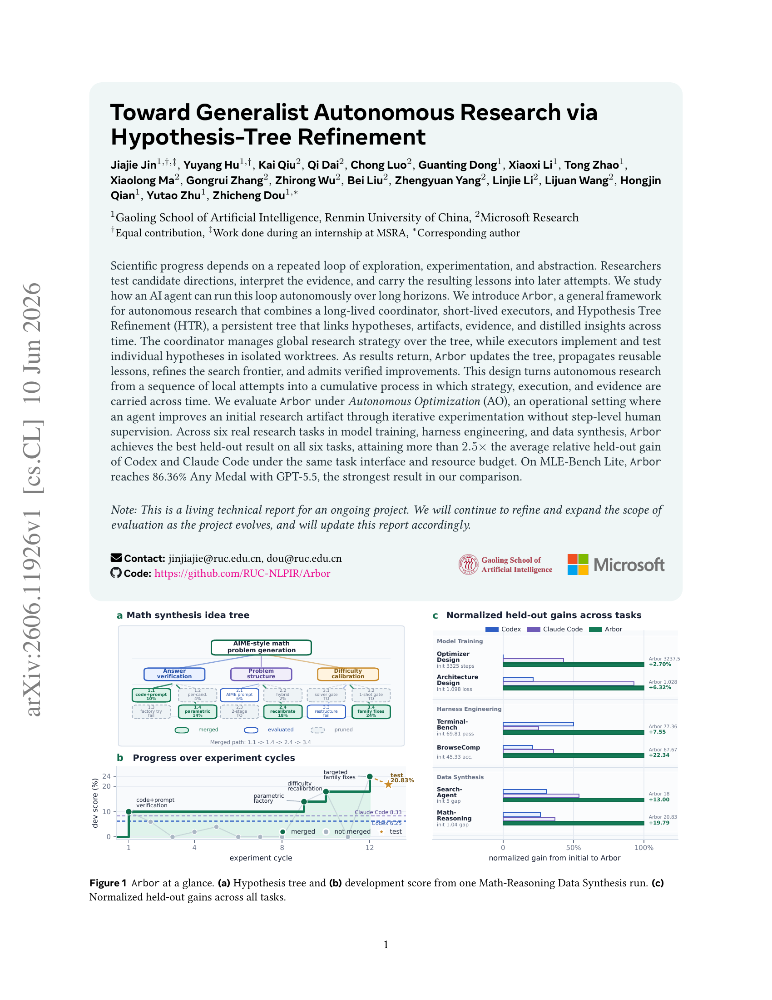
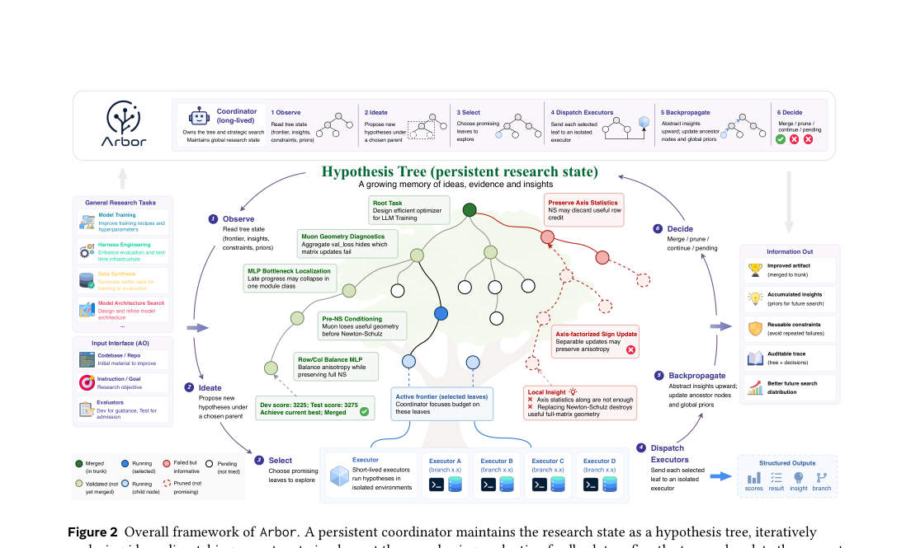
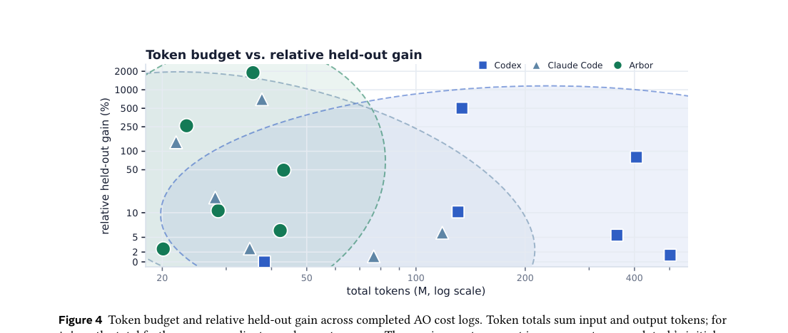
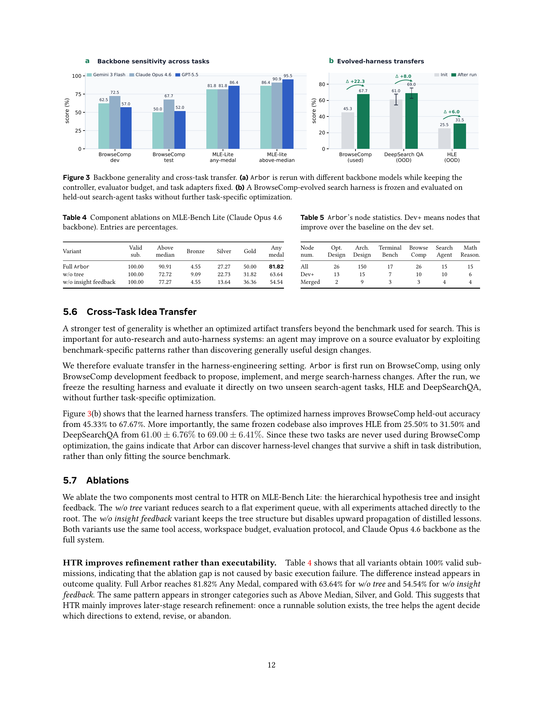
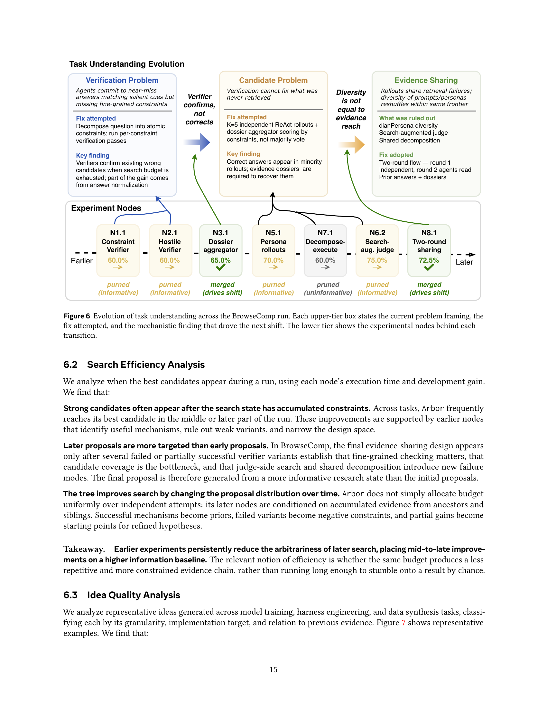
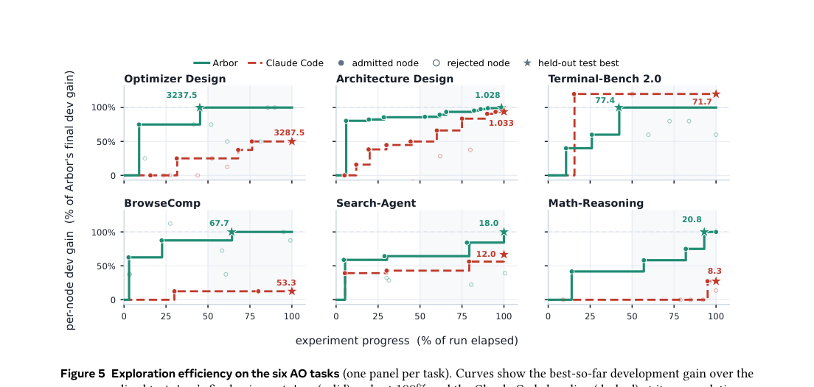
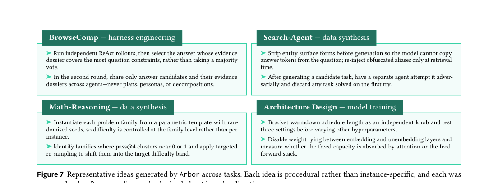
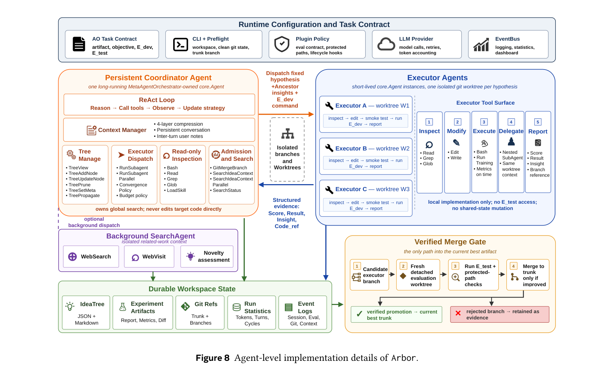

인민대학(RUC)과 Microsoft Research가 발표한 Arbor는 AI 에이전트가 **가설 트리(Hypothesis Tree)**를 유지하면서 장기간 자율 연구를 수행하는 프레임워크다. Codex나 Claude Code 같은 코딩 에이전트보다 2.5배 높은 성능 개선을 달성했다. 핵심 질문: “AI가 실험을 오래 돌린다고 연구가 되는가?” — Arbor의 답은 아니다, 구조가 필요하다다.

문제 정의: 자율 최적화(Autonomous Optimization)
Arbor가 푸는 문제를 **자율 최적화(AO)**라고 부른다. 정의는 간단하다:
초기 아티팩트 와 목표 가 주어지면, 에이전트가 dev evaluator 의 피드백만 사용해 반복 실험을 수행하고, 최종적으로 held-out test evaluator 에서 개선된 아티팩트 를 반환한다.
여기서 핵심은 dev/test 분리다. dev 점수로 탐색을 유도하지만, 진짜 진전은 오직 test 점수로만 인정된다. 이걸 지키지 않으면 에이전트가 dev 셋에 오버피팅한다.
Arbor는 6개의 실제 연구 태스크를 구성했다:
| 유형 | 태스크 | 메트릭 |
|---|---|---|
| 모델 학습 | Optimizer Design | 타겟 loss 도달 스텝 수 (↓) |
| 모델 학습 | Architecture Design | 최종 loss (↓) |
| 하네스 엔지니어링 | Terminal-Bench 2.0 | pass rate (↑) |
| 하네스 엔지니어링 | BrowseComp | 정확도 (↑) |
| 데이터 합성 | Search-Agent Data Synthesis | pass gap (↑) |
| 데이터 합성 | Math-Reasoning Data Synthesis | pass gap (↑) |
핵심 구조: 가설 트리 정제(HTR)
Arbor의 핵심은 **가설 트리(Hypothesis Tree)**다. 이건 그냥 로그가 아니다. 각 노드가 세 가지 정보를 바인딩한다:
- 가설(Hypothesis): “이렇게 바꾸면 좋아질 것이다”라는 검증 가능한 주장
- 통찰(Insight): 실험 결과의 재사용 가능한 해석 — 왜 됐거나 안 됐는지
- 메타데이터(Metadata): 점수, 결과, git 브랜치 참조 등 실행 가능한 증거

트리는 동시에 세 가지 역할을 한다:
- 탐색 프론티어: 어떤 방향이 활성/검증/가지치기됐는지 기록
- 장기 메모리: 성공과 실패 모두에서 재사용 가능한 증거 저장
- 감사 추적: 각 아티팩트 변경이 어떤 가설과 증거에서 비롯됐는지 연결
6단계 사이클
Coordinator가 반복하는 사이클:
- 관찰(Observe) — 트리 상태를 다시 읽는다. 대화 히스토리가 아니라 트리가 권위 있는 상태다.
- 발상(Ideate) — 축적된 증거 위에 새 자식 가설을 제안한다. 자유로운 브레인스토밍이 아니라, 검증된 통찰은 기반으로, 가지치기된 노드는 음의 제약으로 활용.
- 선택(Select) — 단순 점수 최대화가 아니다. “이 가설이 틀리면 무엇을 배울 수 있는가?”를 고려.
- 파견(Dispatch) — 병렬 executor들이 격리된 git worktree에서 각자 하나의 가설을 구현·평가.
- 역전파(Backpropagate) — 신경망처럼 리프에서 루트 방향으로 통찰을 추상화. 국소적 발견이 전역적 제약이 된다.
- 결정(Decide) — held-out merge gate: dev에서 좋아도 test에서 안 좋으면 머지 안 한다.

왜 그냥 코딩 에이전트보다 나은가
Codex와 Claude Code는 48시간 동안 같은 태스크를 돌린다. 같은 예산, 같은 인터페이스. 그런데 Arbor가 6개 태스크 전부에서 최고 성능을 낸다.
비결은 토큰을 더 쓴 게 아니다. Arbor는 20-43M 토큰을 쓰는데, 이건 Codex/Claude Code와 비슷한 규모다. 차이는 어떻게 썼는지에 있다:
- 토큰이 서로 다른 가설을 유지하는 데 쓰이고
- 격리된 환경에서 비교 실험이 돌아가고
- 결과가 트리에 기록되어 다음 탐색을 제약한다
특히 인상적인 결과:
| 태스크 | Initial | Codex | Claude Code | Arbor |
|---|---|---|---|---|
| BrowseComp (acc.) | 45.33 | 50.00 | 53.33 | 67.67 |
| Math-Reasoning (gap) | 1.04 | 6.25 | 8.33 | 20.83 |
| Terminal-Bench (pass) | 69.81 | 73.59 | 71.70 | 77.36 |
dev/test 분리의 효과도 분명하다. Claude Code는 Terminal-Bench에서 dev 75.00 → test 71.70으로 떨어진다 (오버피팅). Arbor는 dev 72.22 → test 77.36으로 dev보다 test가 더 높다.
MLE-Bench Lite: 86.36% Any Medal
Arbor는 MLE-Bench Lite에서도 강력한 성능을 보인다. GPT-5.5 백본으로 86.36% Any Medal, 77.27% Gold — 현재 리더보드 최고 기록이다. 같은 Gemini-3-Flash 백본에서도 81.82% Any Medal로 기존 최고와 동점.
백본 무관성과 태스크 간 전이

Arbor의 HTR 구조는 특정 모델에 종속되지 않는다. Gemini-3-Flash(가벼운 모델)로 돌려도 BrowseComp와 MLE-Bench에서 개선이 관찰된다.
더 흥미로운 건 태스크 간 전이다. BrowseComp에서 최적화한 검색 하네스를 얼려서(freeze) 본 적 없는 HLE와 DeepSearchQA에 적용했더니:
- HLE: 25.50% → 31.50% (+6.0)
- DeepSearchQA: 61.00% → 69.00% (+8.0)
이건 Arbor가 벤치마크-specific 패턴에 맞추는 게 아니라, 일반적으로 유용한 설계 변경을 발견한다는 뜻이다.
가설 정제는 어떻게 진화하는가
BrowseComp 트리를 분석하면 가설 이해가 어떻게 깊어지는지 볼 수 있다. 세 번의 “수축”이 일어난다:
- 검증 문제: 초기에 “에이전트가 salient cue에 매칭해서 near-miss 답을 낸다”는 가설 → 제약 분해 검증으로 확인됨
- 후보 문제: 검증은 기존 후보를 판별할 수 있지만, 검색이 못 찾은 정답은 복구 못 함 → 병목이 검증에서 후보 커버리지로 이동
- 증거 공유: 독립 롤아웃의 증거 dossier를 집계하는 2라운드 구조가 최종 승자

이게 “flat trial-and-error”와 HTR의 결정적 차이다. 초기 실험들이 나중 실험의 임의성을 줄인다. 나중에 제안된 가설은 더 많은 정보 위에 서 있다.
탐색 효율성: 나중 실험이 더 정확하다

강한 후보는 보통 탐색 상태가 제약을 충분히 축적한 후에 나타난다. Arbor의 후반 노드들은 조상과 형제의 증거 위에서 제안되기 때문에, 초반의 독립적 시도보다 더 정확하다. 핵심은 “충분히 오래 돌렸는가”가 아니라 “같은 예산으로 더 덜 반복적이고 더 기억-aware한 탐색을 했는가”다.
아이디어의 질: 국소적이고 증거-조건부

Arbor가 만드는 유용한 아이디어의 특징:
- 국소적이고 실행 가능: 전체 시스템을 뒤엎는 게 아니라 특정 컴포넌트를 수정
- 증거-조건부: 이전 실패에서 비롯됨. BrowseComp의 evidence-dossier 설계는 verifier-only 접근의 실패에서 나왔다
- 절차적: 인스턴스-specific이 아니라 일반화 가능한 절차
에이전트 내부 구현

Coordinator와 executor 각각이 LLM 기반이며, 트리 인터페이스를 통해 통신한다. Executor는 가설을 고정된 채로 구현만 담당 — 가설을 바꾸면 반환된 점수가 어느 노드에 대한 증거인지 알 수 없게 된다. 이 계약이 트리 업데이트의 의미를 보존한다.
한계와 열린 질문
- 스칼라 목적: 현재는 단일 메트릭만 최적화. 다목적 트레이드오프는 미해결
- 상위 수준 재프레이밍: Arbor는 기존 프레임 안에서 강하지만, 완전히 새로운 방향을 발견하는 능력은 제한적
- 태스크 설계 의존성: 초기 아티팩트, evaluator, 메트릭이 발견 가능한 아이디어의 종류를 결정
- 48시간 제한: 더 긴 호라이즌, 더 복잡한 태스크에서의 행동은 미지수
내 평가
Arbor의 핵심 기여는 자율 연구를 “더 많은 시도”가 아니라 “더 적은 반복, 더 많은 기억”의 문제로 프레이밍한 것이다. 가설 트리는 단순한 로그가 아니라 탐색 프론티어 + 장기 메모리 + 감사 추적의 삼위일체다.
특히 인상적인 건:
- held-out merge gate의 실용적 효과 — 오버피팅을 막을 뿐 아니라 dev/test 간극을 정보로 활용
- insight 역전파 — 신경망에서 영감받았지만, 연구 과정에 적용한 게 정말 영리하다
- 태스크 간 전이 — 벤치마크에 맞추는 게 아니라는 실증적 증거
한계도 솔직하다. “완전히 새로운 발상”은 여전히 인간의 영역이고, 스칼라 메트릭 밖에서는 검증이 안 됐다. 하지만 자율 연구를 구조화된 문제로 만들었다는 점에서, 이 방향은 계속 주목할 가치가 있다.
Paper: Jiajie Jin et al., “Toward Generalist Autonomous Research via Hypothesis-Tree Refinement,” arXiv:2606.11926, 2026. Code: github.com/RUC-NLPIR/Arbor